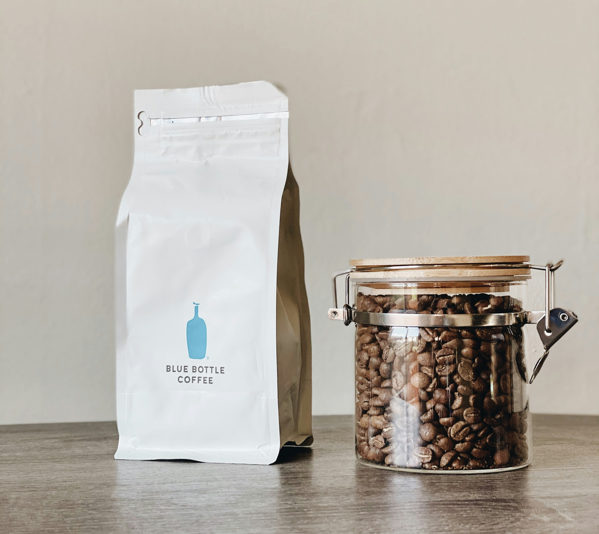
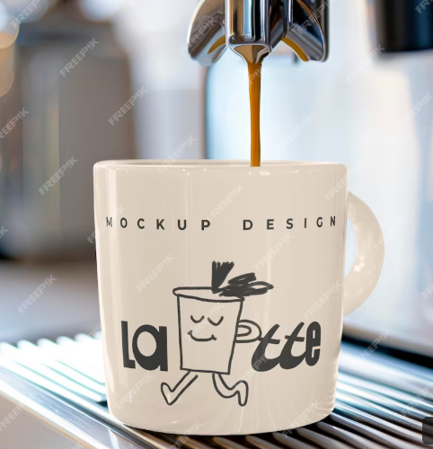

Shop
Light Roast

Enjoy our light roast! Our light roast are bright, acidic and fruity. They preserve all the natural flavor of our coffee beans.
Medium Roast
Enjoy a balanced flavored roast. Our medium Roast has notes of caramel, chocolate and nuts with mild acidity.
Dark Roast

Enjoy our dark roat, with a rich, bold, and chocolate taste. It has low acidicy and brings out bitter flavors when roasted.
Coffee Mug
Enjoy your coffee in a simple yet useful mug.